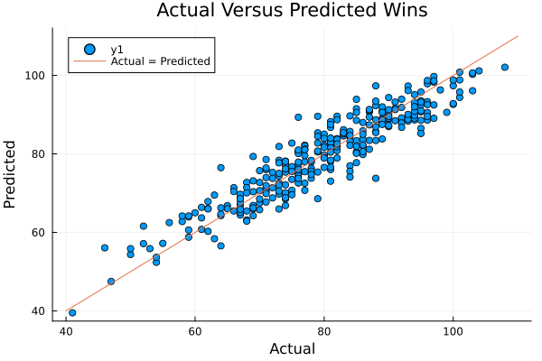

The purpose of this notebook is to explore machine learning in Julia. The goal is to train a model that will take a team's yearly stats kept track of in the boxscore to predict the number of games that the team will win in that year.
The data used for this project is from Lahman's Database, which provides yearly box score stats for each individual player, team, and park in the MLB. This database provides several datasets that could be used for this analysis. The first option is a dataset for the team's yearly stats with 25 features, and the second is taking the player's yearly stats from fielding, batting, and pitching datasets and aggregating them. For our purposes, the second option will be used as it results in around 40 features and because it gives further exposure to data wrangling. The data is loaded below with some wrangling to change the names of some of the teams as they have changed their name, but are one constant franchise (for example, the Miami Marlins were the Florida Marlins before rebranding). Additionally, the year is limited to only going as far back as 1965. This is for our model to better predict wins as games played reached its current format in 1962.
using CSV, DataFrames
Bat = CSV.read("/Users/jackmerchen/Data/baseballdatabank-2022.2/core/Batting.csv", DataFrame)
Pitch = CSV.read("/Users/jackmerchen/Data/baseballdatabank-2022.2/core/Pitching.csv", DataFrame)
Field = CSV.read("/Users/jackmerchen/Data/baseballdatabank-2022.2/core/Fielding.csv", DataFrame)
Value_map = Dict("BAL" => "BAL", "CHA" => "CWS", "CHN" => "CHC", "FLO" => "FLA", "KC1" => "KCR", "LAN" => "LAD", "ML1" => "MLN", "ML4" => "MLN", "NYA" => "NYY", "NYN" => "NYM", "SDN" => "SDP", "SE1" => "SEP", "SFN" => "SFG", "SLN" => "STL", "TBA" => "TBR", "WAS" => "WSH", "WS1" => "WSA", "WS2" => "WSN", "DET" => "DET", "CLE" => "CLE", "MIN" => "MIN", "PHI" => "PHI", "CIN" => "CIN", "LAA" => "LAA", "PIT" => "PIT", "BOS" => "BOS", "HOU" => "HOU", "CAL" => "LAA", "ATL" => "ATL", "OAK" => "OAK", "KCA" => "KCR", "MON" => "MON", "TEX" => "TEX", "SEA" => "SEA", "TOR" => "TOR", "COL" => "COL", "ANA" => "LAA", "ARI" => "ARI", "MIL" => "MIL", "MIA" => "MIA")
Bat = filter(Bat -> Bat.yearID > 1964, Bat)
Bat[!, "teamID"] = [Value_map[item] for item in Bat[!, "teamID"]]
Bat = select!(Bat, Not(["playerID", "stint", "lgID", "G"]))
Pitch = filter(Pitch -> Pitch.yearID > 1964, Pitch)
Pitch[!, "teamID"] = [Value_map[item] for item in Pitch[!, "teamID"]]
Pitch = select!(Pitch, Not(["playerID", "stint", "lgID", "ERA", "BAOpp", "L"]))
Field = filter(Field -> Field.yearID > 1964, Field)
Field[!, "teamID"] = [Value_map[item] for item in Field[!, "teamID"]]
first(Field)DataFrameRow (18 columns)
| playerID | yearID | stint | teamID | lgID | POS | G | GS | InnOuts | PO | |
|---|---|---|---|---|---|---|---|---|---|---|
| String15 | Int64 | Int64 | String | String3 | String3 | Int64 | Int64? | Int64? | Int64 | |
| 1 | aaronha01 | 1965 | 1 | MLN | NL | OF | 148 | 148 | 3928 | 298 |
Finding the yearly aggregates based off player stats means grouping by both team and year and then finding the aggregates. In R, this is as simple as using Dplyr's group_by, piping, and summarise, but is not so simple in Julia. In Julia, the groupby function creates a new table for each group found. This means using the method of Split-Apply-Combine to get the desired output. The groupby function accomplishes the split portion of this method. Next, in the apply portion, we just grap the names of the columns as opposed to applying other functions to the groups. Then, in the combine portion, we combine the different groups into a single dataset again, with the columns containing data being summed. This gives the yearly aggregates for one of the datasets. This method is applied to each the batting, fielding, and pitching stats, as seen below.
# Split
grp = groupby(Bat, ["teamID", "yearID"])
# Apply
cols = names(grp)
data_cols = cols[3:end]
# Combine
bdf = combine(grp, data_cols .=> sum .=> data_cols)
bdf[!, :Ave] = bdf[!, :H] ./ bdf[!, :AB]
bdf[!, :TB] = bdf[!, :H] .- bdf[!, "2B"] .- bdf[!, "3B"] .- bdf[!, :HR] .+ bdf[!, "2B"] .* 2 .+ bdf[!, "3B"] .* 3 .+ bdf[!, :HR] .* 4
first(bdf, 5)5 rows × 20 columns (omitted printing of 8 columns)
| teamID | yearID | AB | R | H | 2B | 3B | HR | RBI | SB | CS | BB | |
|---|---|---|---|---|---|---|---|---|---|---|---|---|
| String | Int64 | Int64 | Int64 | Int64 | Int64 | Int64 | Int64 | Int64 | Int64 | Int64 | Int64 | |
| 1 | MLN | 1965 | 5542 | 708 | 1419 | 243 | 28 | 196 | 664 | 64 | 37 | 408 |
| 2 | CHC | 1965 | 5540 | 635 | 1316 | 202 | 33 | 134 | 590 | 65 | 47 | 532 |
| 3 | BAL | 1965 | 5450 | 641 | 1299 | 227 | 38 | 125 | 596 | 67 | 31 | 529 |
| 4 | LAA | 1965 | 5354 | 527 | 1279 | 200 | 36 | 92 | 486 | 107 | 59 | 443 |
| 5 | HOU | 1965 | 5483 | 569 | 1299 | 188 | 42 | 97 | 523 | 90 | 37 | 502 |
grp = groupby(Pitch, ["teamID", "yearID"])
cols = names(grp)
data_cols = cols[3:end]
pdf = combine(grp, data_cols .=> sum .=> data_cols)
pdf[!, :ERA] = pdf[!, :ER] .* 27 ./ pdf[!, :IPouts]
rename!(pdf, :HR => :HR_opp, :BB => :BB_opp, :SO => :SO_opp, :IBB => :IBB_opp, :HBP => :HBP_opp, :R => :R_opp, :SH => :SH_opp, :SF => :SF_opp, :GIDP => :GIDP_opp, :H => :H_opp)
first(pdf, 5)5 rows × 25 columns (omitted printing of 14 columns)
| teamID | yearID | W | G | GS | CG | SHO | SV | IPouts | H_opp | ER | |
|---|---|---|---|---|---|---|---|---|---|---|---|
| String | Int64 | Int64 | Int64 | Int64 | Int64 | Int64 | Int64 | Int64 | Int64 | Int64 | |
| 1 | CHC | 1965 | 72 | 456 | 164 | 33 | 8 | 35 | 4416 | 1470 | 618 |
| 2 | DET | 1965 | 89 | 402 | 162 | 45 | 12 | 31 | 4365 | 1283 | 542 |
| 3 | KCR | 1965 | 59 | 540 | 162 | 18 | 6 | 32 | 4299 | 1399 | 675 |
| 4 | SFG | 1965 | 95 | 425 | 163 | 42 | 11 | 42 | 4396 | 1325 | 521 |
| 5 | HOU | 1965 | 65 | 418 | 162 | 29 | 7 | 26 | 4383 | 1459 | 624 |
select!(Field, Not(["playerID", "stint", "lgID", "POS", "G", "GS", "DP", "PB", "WP", "ZR", "InnOuts", "SB", "CS"]))
grp = groupby(Field, ["teamID", "yearID"])
cols = names(grp)
data_cols = cols[3:end]
fdf = combine(grp, data_cols .=> sum .=> data_cols)
fdf[!, :ERPer] = fdf[!, :E] ./ fdf[!, :PO]
first(fdf, 5)5 rows × 6 columns
| teamID | yearID | PO | A | E | ERPer | |
|---|---|---|---|---|---|---|
| String | Int64 | Int64 | Int64 | Int64 | Float64 | |
| 1 | MLN | 1965 | 4345 | 1742 | 140 | 0.0322209 |
| 2 | CHC | 1965 | 4416 | 2004 | 171 | 0.0387228 |
| 3 | BAL | 1965 | 4411 | 1770 | 126 | 0.028565 |
| 4 | LAA | 1965 | 4330 | 1868 | 123 | 0.0284065 |
| 5 | HOU | 1965 | 4384 | 1762 | 166 | 0.037865 |
After the aggregates are found for each of the separate datasets, they can then be combined into a single dataset again using a join on both year and team. The columns of the final dataset that will be used in the training of the model can be seen below.
using CSV
df = leftjoin(bdf, pdf, on = [:teamID, :yearID])
df = leftjoin(df, fdf, on = [:teamID, :yearID])
replace!(df.SH_opp, missing => 0)
replace!(df.SF_opp, missing => 0)
replace!(df.GIDP_opp, missing => 0)
println(names(df))
#CSV.write("/Users/jackmerchen/Data/Year_Baseball.csv", df)["teamID", "yearID", "AB", "R", "H", "2B", "3B", "HR", "RBI", "SB", "CS", "BB", "SO", "IBB", "HBP", "SH", "SF", "GIDP", "Ave", "TB", "W", "G", "GS", "CG", "SHO", "SV", "IPouts", "H_opp", "ER", "HR_opp", "BB_opp", "SO_opp", "IBB_opp", "WP", "HBP_opp", "BK", "BFP", "GF", "R_opp", "SH_opp", "SF_opp", "GIDP_opp", "ERA", "PO", "A", "E", "ERPer"]
Now that the data has been combined into a single dataset, we are ready to break it up again. The data will be randomly split into two datasets, one to train the model on, and that the model has not seen yet that will be used to test the effectiveness of the model. Splitting the model into a training set with 80% of the data will give us 1192 instances to train our model on and 298 to test the model on (before this was done, both the 1994 and 2020 seasons were excluded as both were shortened seasons). Each of these datasets is then split into a dataset containing features and another containing the target (Wins).
using MultivariateStats, RDatasets, DataFrames, Random, LinearAlgebra
filter!(df -> df.yearID != 2020, df)
filter!(df -> df.yearID != 1994, df)
#select!(df, Not(["G", "SV", "SHO"]))
function splitdf(df, pct)
@assert 0 <= pct <= 1
ids = collect(axes(df, 1))
shuffle!(ids)
per = ids .<= nrow(df) .* pct
test = view(df, per, :)
train = view(df, .!per, :)
return test, train
end
train, test = splitdf(df, .8)
train_lab = train[:, :W]
train_hold = select(train, Not(["teamID", "yearID", "W"]))
train_df = Matrix(Float32.(train_hold))
train_lab = Float32.(train_lab)
test_df = select(test, Not(["teamID", "yearID", "W"]))
test_df = Matrix(Float32.(test_df))
test_lab = Float32.(test[:, :W])
train_df1192×44 Matrix{Float32}:
5542.0 708.0 1419.0 243.0 28.0 … 4345.0 1742.0 140.0 0.0322209
5540.0 635.0 1316.0 202.0 33.0 4416.0 2004.0 171.0 0.0387228
5450.0 641.0 1299.0 227.0 38.0 4411.0 1770.0 126.0 0.028565
5354.0 527.0 1279.0 200.0 36.0 4330.0 1868.0 123.0 0.0284065
5483.0 569.0 1299.0 188.0 42.0 4384.0 1762.0 166.0 0.037865
5509.0 647.0 1354.0 200.0 38.0 … 4436.0 1938.0 127.0 0.0286294
5368.0 680.0 1278.0 190.0 27.0 4358.0 1591.0 116.0 0.0266177
5393.0 585.0 1294.0 186.0 59.0 4300.0 1620.0 139.0 0.0323256
5488.0 774.0 1396.0 257.0 42.0 4366.0 1770.0 172.0 0.0393953
5686.0 675.0 1506.0 217.0 57.0 4437.0 1977.0 152.0 0.0342574
5495.0 682.0 1384.0 169.0 43.0 … 4396.0 1706.0 148.0 0.033667
5469.0 663.0 1367.0 198.0 21.0 4366.0 1574.0 114.0 0.0261109
5374.0 591.0 1227.0 179.0 33.0 4292.0 1646.0 143.0 0.0333178
⋮ ⋱ ⋮
5348.0 623.0 1244.0 226.0 23.0 … 4245.0 1444.0 122.0 0.0287397
5423.0 786.0 1352.0 295.0 13.0 4303.0 1422.0 91.0 0.021148
5431.0 729.0 1311.0 271.0 17.0 4258.0 1420.0 107.0 0.0251292
5445.0 830.0 1330.0 247.0 24.0 4356.0 1303.0 89.0 0.0204316
5376.0 697.0 1299.0 236.0 37.0 4259.0 1492.0 83.0 0.0194881
5405.0 625.0 1254.0 225.0 24.0 … 4273.0 1462.0 83.0 0.0194243
5336.0 609.0 1261.0 240.0 35.0 4189.0 1378.0 70.0 0.0167104
5210.0 636.0 1243.0 228.0 18.0 4138.0 1312.0 95.0 0.022958
5462.0 804.0 1360.0 271.0 25.0 4365.0 1471.0 80.0 0.0183276
5366.0 734.0 1288.0 262.0 24.0 4256.0 1439.0 94.0 0.0220865
5355.0 697.0 1209.0 233.0 11.0 … 4321.0 1384.0 79.0 0.0182828
5351.0 706.0 1303.0 261.0 22.0 4251.0 1514.0 84.0 0.0197601The model used is a extreme gradient boosted model from the XGBoost package. This model, after training, was then used to predict wins and measured using Mean Squared Error. The Root Mean Squared Error for the model was just over 4, meaning that, on average, the predictions for the wins was withing 5 games.
using XGBoost
dmat = XGBoost.DMatrix(train_df, label = train_lab)
params = Dict("max_depth" => 3, "eta" => 0.1, "objective" => "reg:squarederror")
num_round = 20
dtest = XGBoost.DMatrix(test_df, label = test_lab)
evals = [(dmat, "train"), (dtest, "test")]
mod = XGBoost.xgboost(dmat, num_round; params)[1] train-rmse:56.86199396701842801
[2] train-rmse:40.18185819106857082
[3] train-rmse:28.44061721584919056
[4] train-rmse:20.24998649051805799
[5] train-rmse:14.50663954081389484
[6] train-rmse:10.49224128029195313
[7] train-rmse:7.71404966473369225
[8] train-rmse:5.80855581382417885
[9] train-rmse:4.49480433605527629
[10] train-rmse:3.56710144648384020
[11] train-rmse:2.99874413210618629
[12] train-rmse:2.62628584400327947
[13] train-rmse:2.37056012889610246
[14] train-rmse:2.19640022237753163
[15] train-rmse:2.00324216663417332
[16] train-rmse:1.92352682326846747
[17] train-rmse:1.81552948050350160
[18] train-rmse:1.72157833330610521
[19] train-rmse:1.68412300517385538
[20] train-rmse:1.60398860334257387
Booster(Ptr{Nothing} @0x00007fadf54b23e0)preds = XGBoost.predict(mod, dtest)298-element Vector{Float32}:
80.47774
82.215385
54.360874
89.07074
78.16156
87.38355
93.943146
80.6992
90.69626
89.33131
93.213646
76.00728
60.75884
⋮
47.504807
75.7301
73.76408
84.96909
76.60711
64.17861
69.88752
82.239075
57.13357
68.83273
78.93254
86.75327using MLJBase
function rmse(y_pred::AbstractArray, y_true::AbstractArray)
sqrt(sum((y_pred .- y_true).^2) / length(y_pred))
end
MSE = rmse(preds, test_lab)4.323124f0using Plots
f(x) = x
plot!(scatter(test_lab, preds), title = "Actual Versus Predicted Wins", xlabel = "Actual", ylab = "Predicted")
plot!(f, 40, 110, label = "Actual = Predicted")
Measuring importance of features offers insight into our model that can be used for the real-world by allowing us insight into which features are the most important in predicting wins. It would allow, for example, for a team to know which feature should too be important to them. Using the built-in importance function yields the results below. Unsurprisingly, runs scored, ERA, and earned runs are the top three features in importance. So, you need to score more runs than you allow, which is intuitive. This method of importance, however, shows that hits, doubles, triples, and homeruns (f2, f3, f4, and f5, respectively), are unimportant features, but that total bases touched is more important. This is due to double counting these features as each is used in the calculation of total bases touched. Looking at the correlations for each feature (below the next two code boxes), shows that each (except triples) is strongly correlated to wins. Looking at correlation shows that hits and even walks is as strongly correlated as ERA.
using DataFrames
scores = DataFrame(XGBoost.importance(mod))
show(scores, allrows = true)44×4 DataFrame
Row │ fname gain cover freq
│ String Float64 Float64 Float64
─────┼─────────────────────────────────────────────
1 │ f1 0.308073 0.123187 0.0729167
2 │ f35 0.201676 0.0636664 0.0386905
3 │ f22 0.170092 0.118941 0.0550595
4 │ f39 0.127795 0.0672086 0.0372024
5 │ f6 0.0388091 0.049343 0.0357143
6 │ f40 0.0369852 0.00639603 0.0014881
7 │ f21 0.0186646 0.0287705 0.0178571
8 │ f17 0.0182916 0.00586238 0.0104167
9 │ f28 0.00808123 0.0140372 0.0193452
10 │ f9 0.00663741 0.0492502 0.0386905
11 │ f18 0.00436627 0.0131556 0.0193452
12 │ f20 0.00426411 0.0225214 0.0238095
13 │ f11 0.00415272 0.0294434 0.016369
14 │ f25 0.00368765 0.00743239 0.014881
15 │ f27 0.00355813 0.0200311 0.0267857
16 │ f29 0.00349311 0.0341225 0.0267857
17 │ f23 0.00310188 0.0262647 0.0223214
18 │ f16 0.00305015 0.0384767 0.0267857
19 │ f0 0.0023752 0.0221193 0.09375
20 │ f33 0.00229351 0.0129854 0.0133929
21 │ f15 0.00189972 0.0130473 0.0223214
22 │ f13 0.00186655 0.0293042 0.0208333
23 │ f14 0.00174932 0.00637283 0.0193452
24 │ f2 0.00154389 0.00682913 0.0119048
25 │ f3 0.00154139 0.00692967 0.0267857
26 │ f42 0.00150963 0.0105183 0.0133929
27 │ f8 0.00147177 0.0166745 0.0223214
28 │ f26 0.00146899 0.00351898 0.016369
29 │ f43 0.00146463 0.0223977 0.0133929
30 │ f41 0.00141974 0.0121192 0.0208333
31 │ f36 0.00141235 0.0112221 0.0193452
32 │ f24 0.00137463 0.00651204 0.016369
33 │ f7 0.00134261 0.0206498 0.0223214
34 │ f37 0.00129879 0.00409129 0.016369
35 │ f31 0.00128959 0.00904879 0.0223214
36 │ f34 0.00121031 0.0123048 0.00892857
37 │ f5 0.00111918 0.00600933 0.0119048
38 │ f4 0.00101637 0.00234341 0.016369
39 │ f10 0.000896114 0.00353444 0.0104167
40 │ f30 0.000876429 0.0218254 0.0133929
41 │ f12 0.000865693 0.00525913 0.0178571
42 │ f19 0.000803265 0.00294666 0.00892857
43 │ f38 0.000670268 0.00200311 0.0104167
44 │ f32 0.000439914 0.0113226 0.00595238println(names(train_hold))["AB", "R", "H", "2B", "3B", "HR", "RBI", "SB", "CS", "BB", "SO", "IBB", "HBP", "SH", "SF", "GIDP", "Ave", "TB", "G", "GS", "CG", "SHO", "SV", "IPouts", "H_opp", "ER", "HR_opp", "BB_opp", "SO_opp", "IBB_opp", "WP", "HBP_opp", "BK", "BFP", "GF", "R_opp", "SH_opp", "SF_opp", "GIDP_opp", "ERA", "PO", "A", "E", "ERPer"]
using DataFrames, PrettyTables
corcol = DataFrame(cor(Matrix(df[!, names(df)[3:44]])), names(df)[3:44])
corcol[!, "names"] .= names(df)[3:44]
corcol = select(corcol, ["W", "names"])
pretty_table(corcol)
#CSV.write("/Users/jackmerchen/Data/Baseball_Correlation.csv", corcol)┌─────────────┬──────────┐
│ W │ names │
│ Float64 │ String │
├─────────────┼──────────┤
│ 0.359469 │ AB │
│ 0.5733 │ R │
│ 0.464624 │ H │
│ 0.291058 │ 2B │
│ 0.0688821 │ 3B │
│ 0.367797 │ HR │
│ 0.558646 │ RBI │
│ 0.130276 │ SB │
│ -0.0360671 │ CS │
│ 0.447807 │ BB │
│ 0.044199 │ SO │
│ 0.294955 │ IBB │
│ 0.164847 │ HBP │
│ 0.000623552 │ SH │
│ 0.330824 │ SF │
│ 0.0946829 │ GIDP │
│ 0.372947 │ Ave │
│ 0.48304 │ TB │
│ 1.0 │ W │
│ 0.0333526 │ G │
│ 0.321102 │ GS │
│ 0.0885294 │ CG │
│ 0.18468 │ SHO │
│ 0.541299 │ SV │
│ 0.396228 │ IPouts │
│ -0.163725 │ H_opp │
│ -0.334127 │ ER │
│ -0.10577 │ HR_opp │
│ -0.272925 │ BB_opp │
│ 0.270528 │ SO_opp │
│ -0.171621 │ IBB_opp │
│ -0.134226 │ WP │
│ -0.0592108 │ HBP_opp │
│ -0.0723258 │ BK │
│ 0.134821 │ BFP │
│ 0.0518899 │ GF │
│ -0.367298 │ R_opp │
│ -0.0912082 │ SH_opp │
│ -0.169021 │ SF_opp │
│ -0.00136654 │ GIDP_opp │
│ -0.464193 │ ERA │
│ 0.396026 │ PO │
└─────────────┴──────────┘